## QFIELD ## THE APP THAT MAPS YOUR WORLD <img class="vertical" src="./assets/qf-phones-plugin2.png" style="width: 50%;"> --- ## 08.06.2011 <p>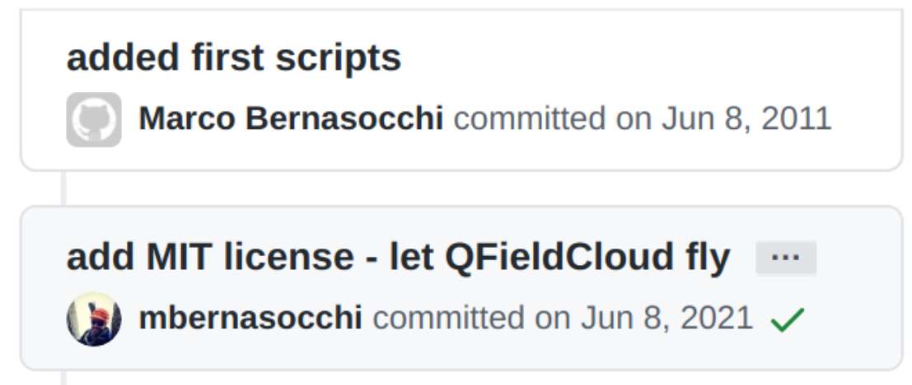</p> --- ## 10.01.2034 <p>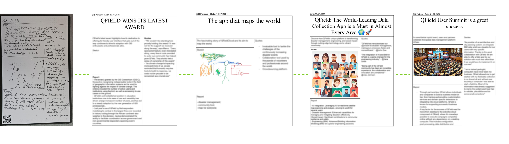</p> --- ## Vision <img src="./assets/qfield-empowers.png" style="width: 80%;"> --- ## Mission <p>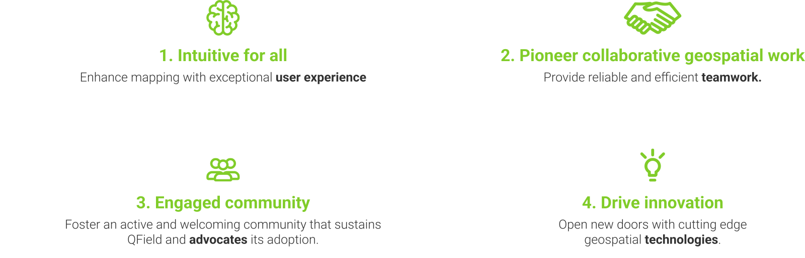</p> --- ## Our Commitment to ## Sustainability <img src="./assets/vision/sdgs.png" style="width: 80%;"> --- ## WHERE ARE WE? ## 3.7 Haida Gwaii <p>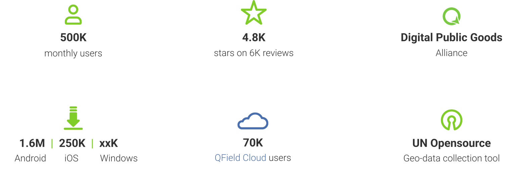</p> --- ### QField ### Collect | collaborate | customise - 📍 Collect data — fast, accurate, offline - ☁️ Collaborate — sync seamlessly with QFieldCloud - 🛠️ Customise — forms, tools, plugins, your way - 🌍 Forests, cities, infrastructure, disaster zones, ... <img src="assets/2025/nls2.png"> --- ### Why QField? ### Built for fieldwork. Trusted worldwide. - ✅ Open source — no vendor lock-in - 🧩 Seamless QGIS integration - ⏱️ Saves time, fewer errors - ☁️ Online + offline sync with QFieldCloud - 📷 Richer data - 💼 Used by NGOs, cities, researchers, and industries <p>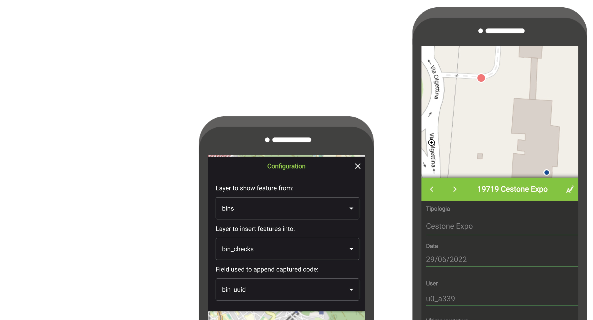</p> --- ## Who is using ## QField? --- ## NLS 🇫🇮 <p>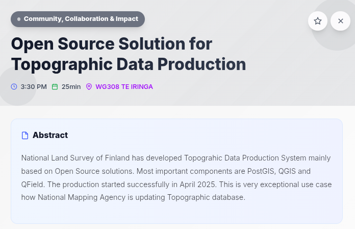</p> --- ## Digital Earth Pacific <p>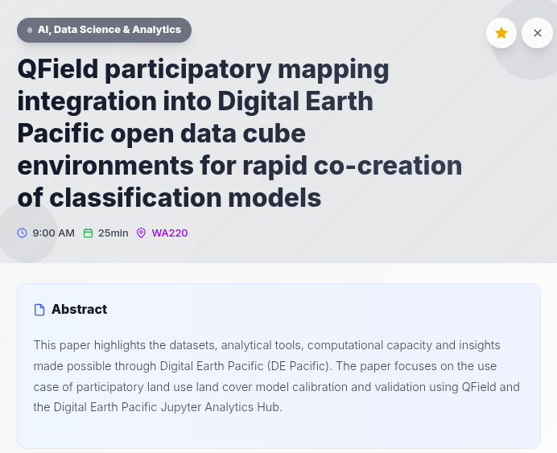</p> --- ## Kiribati 🇰🇮 Tonga 🇹🇴 Vanuatu 🇻🇺 <p>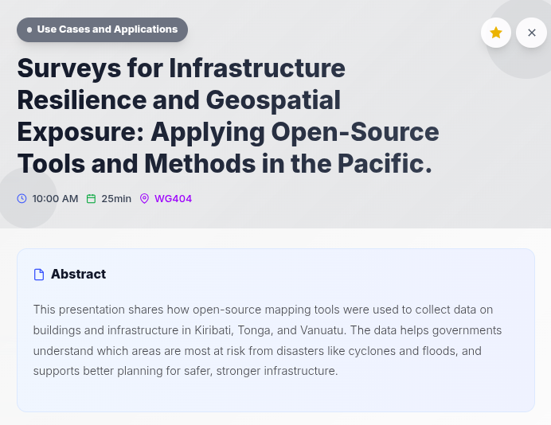</p> --- ## Fiji 🇫🇯 Tonga 🇹🇴 <p>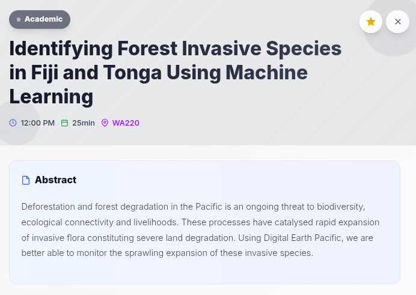</p> --- ## ZIP NZ 🇳🇿 <p>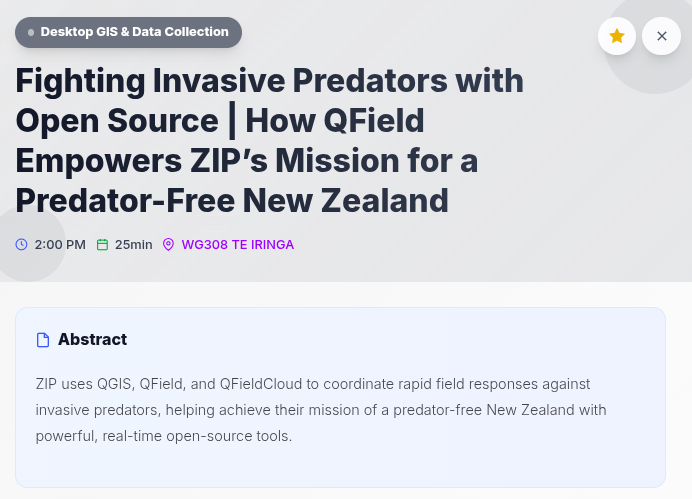</p> --- ## Italy 🇮🇹 <p>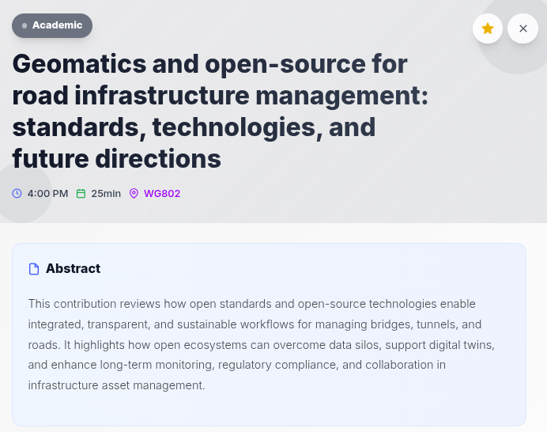</p> --- ## NLS 🇫🇮 <p>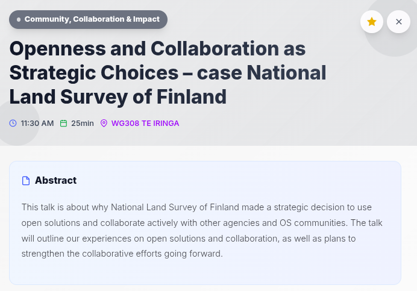</p> --- ## Really, who is using ## QField? --- ## DID I MENTION ## NLS FINLAND? <p>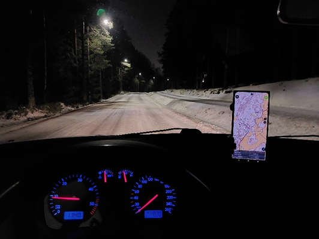</p> --- ## DID YOU SEE A POSSUM? ## 📞 ZIP <p>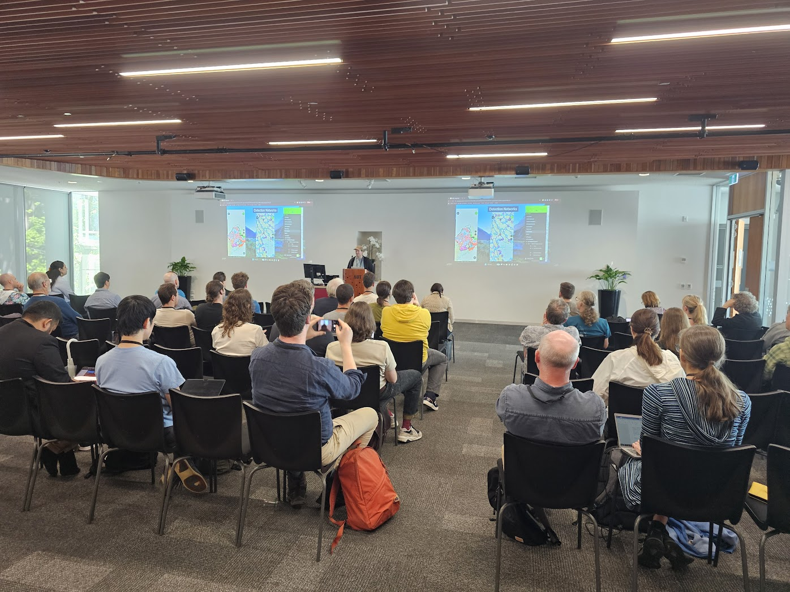</p> --- ## KULTURRETTER ## DAI #### – Workflow to collect and manage data in <span style="font-weight: bolder;">a seamless <br> manner </span>for the emergency rescue of cultural heritage #### – The German Indiana Jones :) supported quite a few <br> <span style="font-weight: bolder;">functionality additions for our camera</span> that includes <br> geotagging (inc. compass), and details stamping <br>(i.e. bottom left "date / lat lon / etc") <a href="https://www.kulturgutretter.org/en/data-acquisition-and-data-management-for-the-emergency-rescue-of-cultural-heritage/" class="styled-link" style="font-size: 15pt; margin-top: 10px;">kulturgutretter.org<img src="assets/2025/cursor.png" alt="cursor" class="cursor"></a> --- ## MONGA BAY ## Online publication #### – <span style="font-weight: bolder;">Tracking</span> for own safety and <span style="font-weight: bolder">to gather <br> evidence</span> of enviromental destruction <br> within protected areas #### – <span style="font-weight: bolder;">Free to use</span>, no hidden strings #### – <span style="font-weight: bolder;">low barrier of entry</span> <br> (i.e. can open a georeferenced PDF) <p>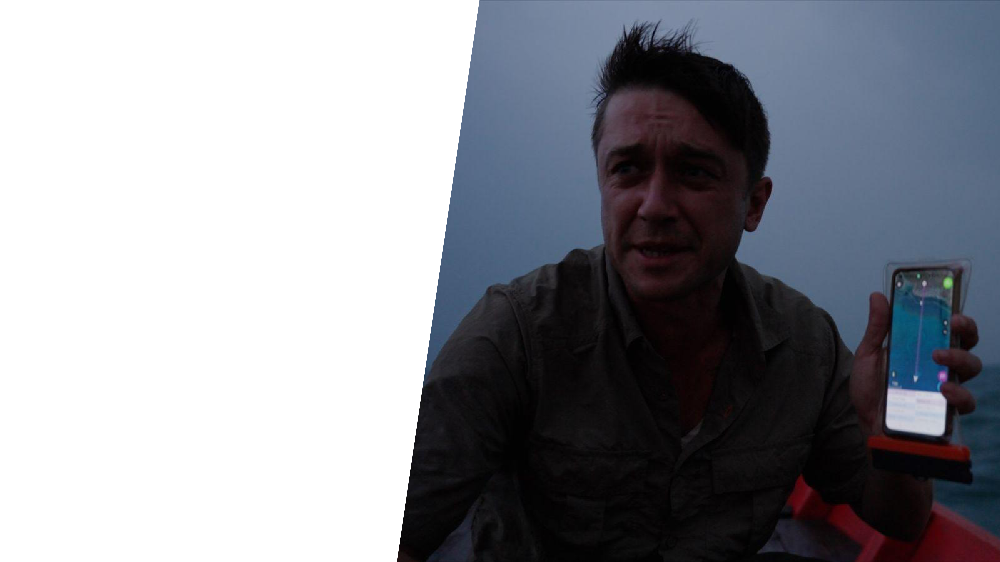</p> --- <!-- .slide: data-background="./assets/2025/cr1.png" --> ## NATIONAL WATER ## WASTE MANAGEMENT - COSTA RICA - On-premise QFC <img src="./assets/2025/cr1.png" class="vertical"> --- ## HOTOSM <p>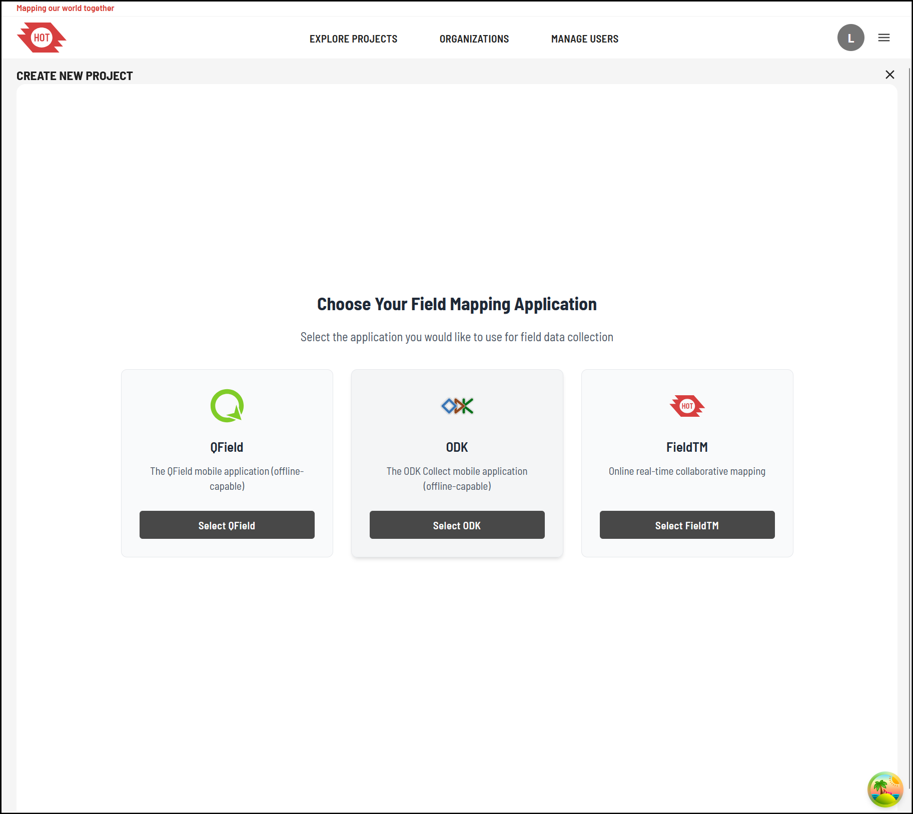</p> --- ## WHAT DO THEY DO ## WITH QFIELD? --- ### Smart Maps ### High-precision mapping anywhere - 🗺️ Location tracking & geofencing - 📍 Full QGIS symbology on mobile - 🎯 Optimized for spatial field tasks <img class="vertical" src="./assets/qf-phones-collect2.png"> --- ### Powerful Forms ### Complex logic, simple interface - 📝 Build in QGIS, no coding - ⚙️ Logic, constraints, defaults - ✅ Clean, validated field input <img src="./assets/2025/cr1.png"> --- ### Capture Everything ### Media-rich data collection - 📷 Photos & video - 🎙️ Audio notes - 🔍 QR codes & NFC scanning <p>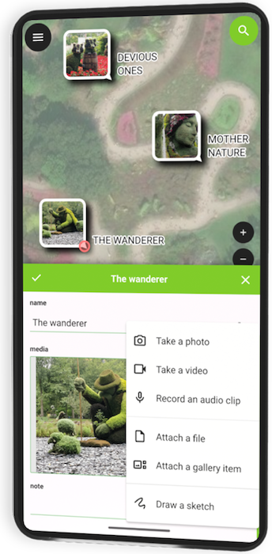</p> --- ### Seamless Sync + Format Support ### Connected workflows, open formats - 🔄 Sync with QFieldCloud - ☁️ Work offline & online - 📦 GPKG, KML, GPX, PDF, more <img class="vertical" src="./assets/pitch-sync.png"> --- ### Editing & Processing Tools ### True field editing power - ✏️ Snap, draw, reshape - 📐 Vertex editing - 🧮 Geometry ops in the field <img class="vertical" src="./assets/qf-phones-advanced-workflows.png"> --- ### Plugin Support ### Customize QField your way - 🔌 QML & JavaScript plugins - 🛠️ Custom workflows - 🚀 Extend functionality as needed <video class="nobox vertical" autoplay muted controls src="./assets/madeforyou-video.mp4"></video> --- ### CONVENIENCE, CONVENIENCE, <span style="color: var(--opengisch-green)">CONVENIENCE</span> #### <span style= "font-weight: lighter"> Easily migrate your XLSForms into QField projects with our new QGIS plugin </span> <img src="./assets/qf-convenience.png" style="width: 100%; margin-right: 70px;"> --- ### QField maps everything ### that matters to you #### What data do you care about? <!-- .slide: class="center-p" --> <a href="https://qfield.org" target="_blank">QField.org</a> | <a href="https://www.opengis.ch/category/qfield/" target="_blank">QField.org/blog</a> | <a href="https://www.linkedin.com/company/qfield/" target="_blank">LinkedIn QField</a> | <a href="https://www.linkedin.com/company/opengisch/" target="_blank">LinkedIn OPENGIS.ch</a> | <a href="mailto:sales@qfield.cloud">Contact Us</a> <img class="space-top" src="./assets/pine.jpg">